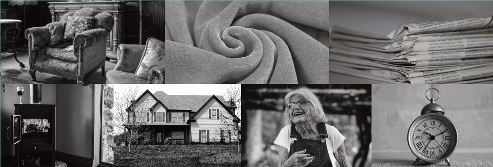
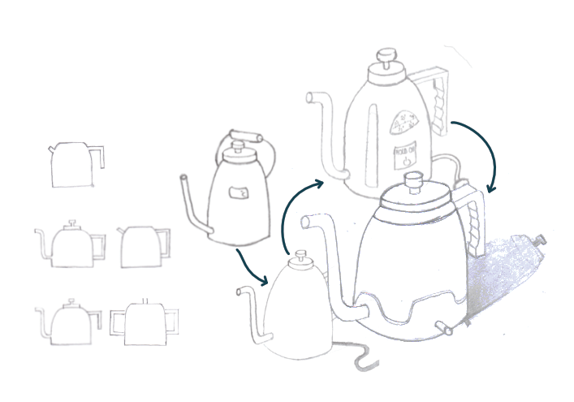
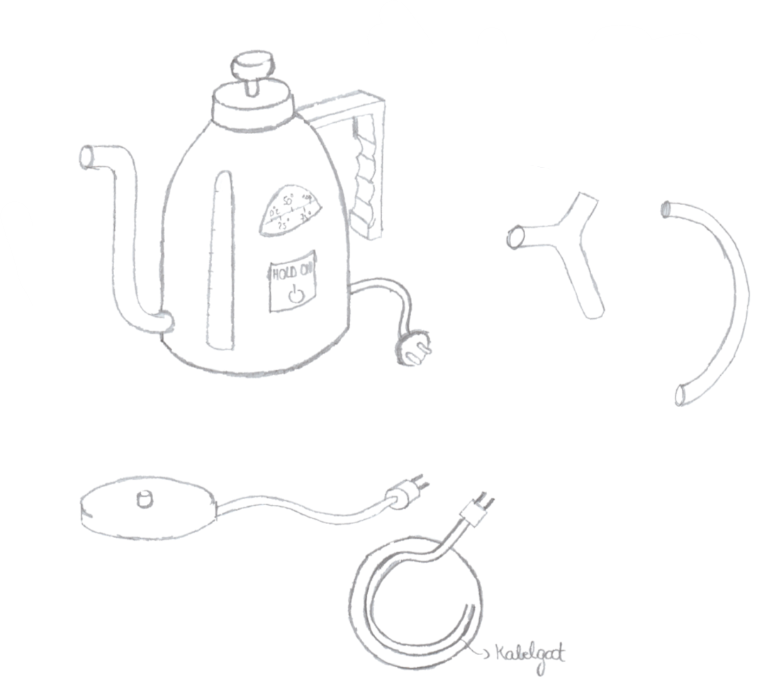
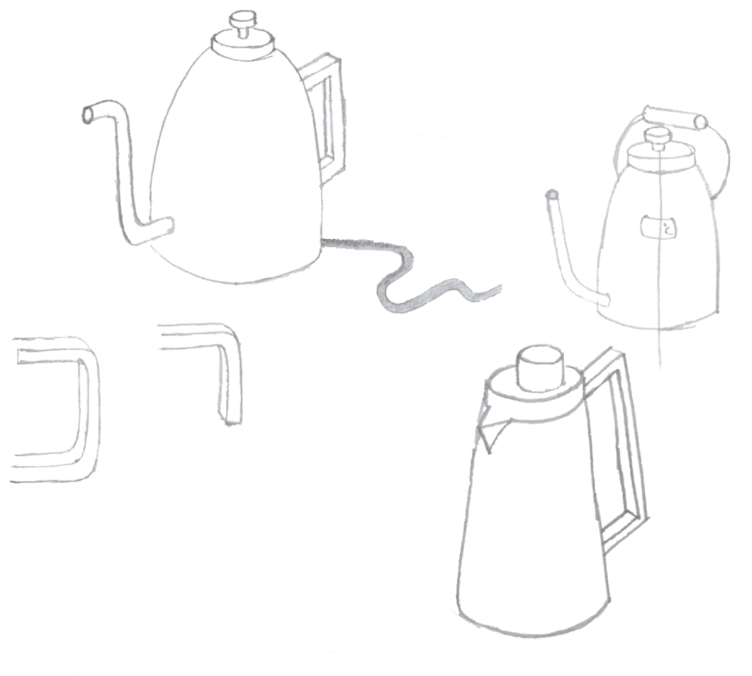
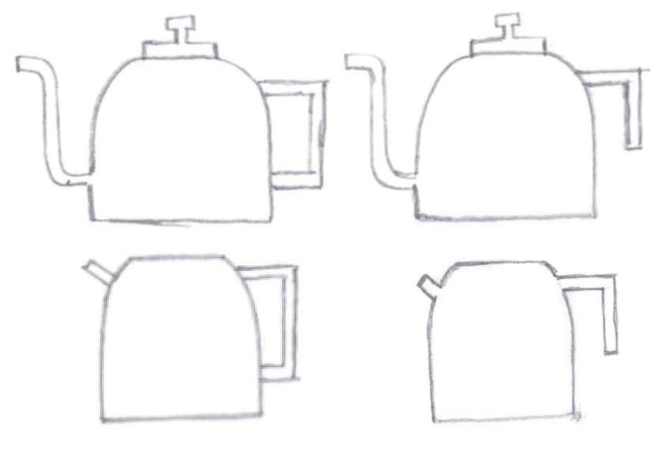

Wat is het?
In ons eerste jaar Industrieel Ontwerpen werd ons de opdracht gegeven om een waterkoker te ontwerpen voor een bepaalde doelgroep. Mijn gekozen doelgroep was de 60+, ookwel de senioren genaamd. De opdracht was als volgt 'Ontwerp en prototype een gebruiksvriendelijk en duurzaam product om water te koken'. Doorheen het proces moest rekening gehouden worden met de doelgroep. Zo werden enkele interviews en gebruikerstesten afgenomen om een ideaal product voor de doelgroep te ontwerpen.
Moodboard
Om het soort gevoel van de doelgroep te begrijpen werd een moodboard samengesteld.
Ideegeneratie
Om tot een mooi ogend product te komen werden talloze schetsen getekend en bestudeerd. Tijdens het schetsen kwam het idee om een fluitketel van vroeger te moderniseren. Dus werd vooral gezocht naar de vorm van een fluitketel.
   Renders